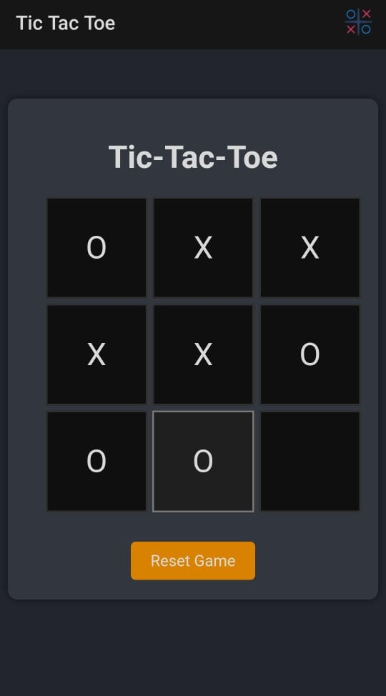

❌⭕ Tic Tac Toe Game
A classic two-player game built entirely using HTML, CSS, and JavaScript. It offers a fun and interactive way to understand core front-end programming, user interactivity, and logic flow.
üîß What It Does
- Displays a responsive 3x3 game board.
- Allows two players to take alternating turns with X and O.
- Detects winner or draw and displays the result.
- Includes a reset button to restart the game anytime.
üñºÔ∏è How It Looks ‚Äì Screenshots
1️⃣ Initial Game UI
Simple and intuitive board UI with empty cells.
2️⃣ Gameplay In Progress
Users take turns. Logic checks for winner or draw after each move.
3️⃣ Game Result Display
Winner is displayed or game declared as draw with a reset option.
üß∞ Tech Stack
- Frontend: HTML, CSS, JavaScript
- No frameworks used: Built from scratch
- Hosting: TiinyHost / GitHub Pages
üéØ Key Highlights
- Pure JavaScript logic with condition checks
- Responsive layout for different devices
- Basic but effective user experience
- Great starter project for beginners in JS